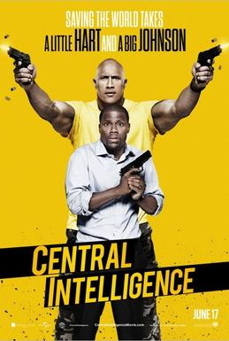

Central de Inteligência: Um espião e meio

Artistas Renomeados do filme:
- Kevin Hart -> Calvin Joyner
- Dwayne Johnson -> Bob Stone
- Aaron Paul -> Phil
- Jason Bateman -> Trevor Olson
Sinopse:
Bob é um nerd que, após sofrer bullying em sua época de escola, se transforma em um
grande e perigoso agente da CIA. Chamado pelo Governo para recuperar o programa de espiões
dos Estados Unidos, decide procurar por Calvin, um dos antigos colegas de escola que acabou
se tornando um comum contador. Mas, antes do mesmo perceber no que ele está se metendo, o
velho amigo o arrasta para um mundo cheio de ação com tiroteios, espionagem e traição, que
poderá colocá-los em perigo de muitas maneiras.